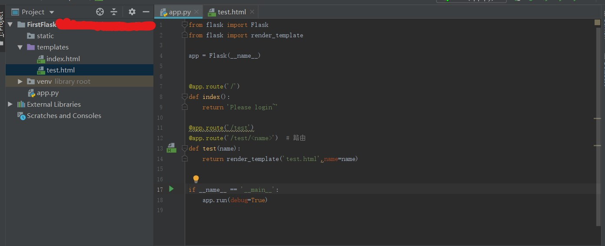

想做个Python的小项目练练手~~，选择了Flask,因为平常遇到的比较多，而且大数据也要用这个应用框架。“民”心所向-哈哈哈哈。
Flask
Flask是一个使用 Python 编写的轻量级 Web 应用框架。
其 WSGI 工具箱采用 Werkzeug ，模板引擎则使用 Jinja2。很多功能的实现都参考了django框架。。
创建一个Flask项目
PyCharm不是社区版可以直接创建。如果不行pip install flask
在app.py中添加一个新的路由
1 | @app.route('/test') |
2 | @app.route('/test/<name>') # 路由 |
3 | def test(name): |
4 | return render_template('test.html',name=name) |
在templates中添加test.html文件
1 | |
2 | <html lang="en"> |
3 | <head> |
4 | <meta charset="UTF-8"> |
5 | <title>首页</title> |
6 | </head> |
7 | <body> |
8 | <p>Welcome to {{name}}!</p> |
9 | </body> |
10 | </html> |

访问http://127.0.0.1:5000/test/ChenZIDu,发现内容被渲染。
搭建环境
flask-sqlalchemy基于sqlalchemy基于Pymysql，特别搞笑，套娃~~
安装Pymysql:
1 | pip install PyMySQL |
再装sqlalchemy:
1 | pip install -i https://pypi.tuna.tsinghua.edu.cn/simple sqlalchemy |
接着装flask-sqlalchemy:
1 | pip install -i https://pypi.tuna.tsinghua.edu.cn/simple flask-sqlalchemy |